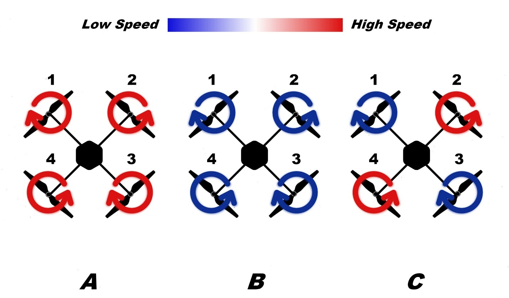

1 – Project Overview
This project includes designing and building a multifunctional quadcopter that can be used as a replacement
for examining dangerous areas that otherwise would be difficult for an individual to investigate on their own by
providing an aerial view of a given situation, disaster monitoring and surveying hazardous locations; additionally,
the quadcopter has a custom-built dedicated Android application that permits the user to have more controllability
and functionality to evaluate, test, and display data acquisition graphs within the smartphone itself.
The application also enables the user to use the phone as means of controlling the movement of the drone
incase an RF controller is not available.
1.1 – Scope of the Problem
Multirotors on paper may seem to be the ideal solution in aerial flights; however, like many things in life
nothing is perfect. In designing a quadcopter, one should take account the main problem that they will face during
the flight simulation and that is the stability of the device. Multicopters are aerodynamically unstable and
absolutely require an on-board computer and sensors in order to provide zero error steadiness. A simple negative
feedback controller will not be able to achieve a smooth even flight and may be susceptible to collisions
and/or flight crashes.
To understand the problem of my goal, a well-documented mathematical representation of the quadcopter must
be introduced to the design to detect the flaws of the system and how to eliminate them; therefore, I
challenge myself to realize how to solve real world problems using engineering experiences and skills
obtained.
1.2 – Objectives
The project revolves around how to apply control theory rules to manage the quadcopter
to be stable during an aerial flight, understand the laws of aerodynamics that governs the quadcopter,
acknowledge how a PID controller works and how to implement it into the software branch, showcase the
engineering skills in both electronics and communication fields, and design and develop a custom application
to allow the user to have a more seamless and functional drone.
1.3 – Method of Approach
To approach the issues and complications we first begin to understand how to transform the design into a block
diagrams which then can be used in multiple simulating programs to learn how to overcome the obstacles. Simulations
such as the one given in MatLab Simulink can interpret the system into different stage blocks using transfer
functions to conduct the experiments and evaluate the problem. From here a student can manage to perfect the
system to his/her desire and hence to implement the logic into a readable code that can then be executed into
the microcontroller.
It is required to have basic programming knowledge of embedded systems in order to achieve an efficient, clean, and fast
executable code to prevent any logical or hardware errors during the time of flight. It should be noted that the
flight time depends on multiple factors including the efficiency of the power supplied to the circuitry. A well
designed power electronics circuit must be taken into account to produce an effective, and energy-saving solution
for the maximum amount of flight time the quadcopter can handle.
2 – MODELING AND DESIGN
2.1 – Quadcopter Dynamics
A multirotor craft consisting of four motors can have either an ‘x’ (cross) or ‘+’ (plus) formation depending
on the desired design. Both cross and plus designs bare resemblance with each other; however, they differ in
terms of flight maneuverability. A quadcopter’s motors rotation direction is important in order to achieve
an uplift, for example, in both cross and plus formation each parallel motors rotate in the same direction
while each adjacent motors rotate in the opposite direction. Quadcopters suffer from large instability due to
the lack of unequal power distribution to each motor, asymmetry in distributing the total weight around the
device, and the fact that drones in general are none linear devices. A controller can control the stability and
movement of the drone by adjusting the rotation speed, hence by adjusting the thrust of each motor to achieve
the desird requirements.
For convience, the cross formation quadcopter is chosen for this project. Below summarize the basic
flight movements for cross formation where A is for upward movement, B is for downward movement and
C is for clockwise movement:

Below summarize the remaining flight movements for cross formation where A is for anticlockwise movement,
B is for forward movement and C is for right movement:
A coordinate frame is given to provide a clear 3D model to be used as a basic reference to derive mathematical
equations as it can be seen below:
The structure of the drone is supposed to be axis symmetrical, the center of gravity and the body fixed
frame origin are assumed to coincide, thrust and drag are proportional to the square root of the propellers
speed, and the rotation matrix is defined to transform the coordinates from body to earth coordinates using
Euler’s angles φ – roll angle , θ – pitch angle, ψ – yaw angle. From the above figure the thrust forces acting
on the quadcopter are F1, F2, F3, and F4, respectively. The quadcopter’s angular velocities are (D1, Ω1),
(D2, Ω2), and (D3, Ω3) where Ω and D are the clockwise and anticlockwise rotations. For a cross formation
quadcopter the angular velocity rotations are Ω1, Ω3, D2, and D3. For simplicity the angular velocities will
be denoted as ω. As propellers rotate they create a reaction momentMi about the z-axis that is proportional
to the square of angular velocity. Thrust produced by opposite propellers results in moments Mx and My,
these moments are given by the difference between forces of opposite propellers multiplied by the quadcopter’s
arm distance L. Additionally, the force of gravity should be considered which acts in the downward direction of
the quadcopter. The forces and moments equations for the quadcopter are represented in the following:
Fi = Kf × Wi^2
Mi = Km × Wi^2
My = (F1-F3) × L
Mx = (F4-F2) × L
Weight = mass * gravity
Where
Kf = Tangential velocity = r*m
Km = Moment Coefficient.
The motion of quadcopter can be analyzed by Newton second law of motion. For linear motion:
Force = mass * linear acceleration
For rotational motion:
Torque = inertia * angular acceleration
For a quadcopter to be stable and hover in the air it must be in equilibrium state. All the forces must
be balanced and the total thrust produced by F1, F2, F3, and F4 must be equal to the weight of the quadcopter,
thus all the moments are equal to zero. The equation that governs the condition of quadcopter suspension is
given as follows:
mass * gravity = F1 + F2 + F3 + F4
All Moments = 0
The equation of motion denoted as mr ̈ for hovering condition is:
m ̈r = F1 + F2 + F3 + F4 - (mass * gravity)
m ̈r = 0
In case of upward motion, the net thrust produced by all propellers must be greater than the weight
of the quadcopter.
mass * gravity < F1 + F2 + F3 + F4
All Moments = 0
m ̈r = F1 + F2 + F3 + F4 - (mass * gravity)
m ̈r > 0
In case of downward motion, the net thrust produced by all propellers must be less than the weight of the
quadcopter.
mass * gravity > F1 + F2 + F3 + F4
All Moments = 0
m ̈r = F1 + F2 + F3 + F4 - (mass * gravity)
m ̈r < 0
Pitch and roll motion are rotation of quadcopter about horizontal axis. In this condition the opposite pair o
f propellers produce unequal force causes net none zero moment. For linear motion on the horizontal plane the
pitch and roll angles must be none zero. This causes none zero component of thrust in the horizontal direction,
these forces in turn causes result in moment in the horizontal plain. For roll motion the following equations are
given:
mass * gravity < F1 + F2 + F3 + F4
All Moments ≠ 0
m ̈r = F1 + F2 + F3 + F4 - (mass * gravity)
Ixx × ̈φ = (F1 - F3) × L
Where
Ixx = Moment of inertia about the x axis
The yaw motion is the rotation of quadcopter in the horizontal plane. If the reaction moment produced by
one pair of propellers is more than the moment produced by other pair of propellers then there is net result
in moment produced which causes a yaw rotational motion; otherwise, no yaw motion is produced. For a quadcopter
to yaw while hovering the following conditions should be achieved:
mass * gravity = F1 + F2 + F3 + F4
All Moments ≠ 0
m ̈r = F1 + F2 + F3 + F4 - (mass * gravity)
Ixx × ̈φ = M1 + M2 + M3 + M4
2.2 – PID Controller
Many different types of controllers can be used to achieve the required stability process with the
drone itself. Begin by understanding the main approaches when designing a controller. Many paths leads
to a good controller and this choice usually depends on what kind of data is available. Usually one tries
to reduce the error signal as much as possible at any given moment. Thus, one must determine which
parameters of highest priority are to be optimized in the controller. Choices may vary from a fast
response controller, prioritizing minimum steady state error, stability of the closed-loop system,
and maximum overshoot.
Proportional-integral-derivative controller is a control loop feedback mechanism widely used in
industrial control systems. A PID controller calculates an error value as the difference between a
measured process variable and a desired set-point. The controller attempts to minimize the error by
adjusting the process through use of a manipulated variable. The PID controller algorithm involves
three separate constant parameters and is accordingly: the proportional, the integral and the
derivative values, denoted by P, I, D. The block diagram of a PID controller is shown below:
The variable (E) represent the tracking error, the difference between the desired input value (R)
and the actual output (Y). The proportional (P) block is represented as a constant ‘Kp’, the integral
(I) block is a series combination of constant ‘Ki’ and an integration block, and the derivative (D) block
is similarly a series combination of constant ‘Kd’ and a derivative block. The proportional (P) controller
generates a control signal which is proportional to the present error. That is, as the error arises, higher
control signals will be produced by the P block to try to minimize this error. The integral (I) term will
generate a signal which is proportional to the sum of past error values. This block is very useful in cases
where a single P controller cannot reach zero error in steady state. When that occurs, a constant error will
remain in the input of the controller and a simple I block can integrate that constant producing an increasing
control signal to lead the error to zero. Finally, the derivative (D) controller will generate a control signal
which is proportional to the rate of change of the error signal. Thus, it has a predictive effect. Usually
this term contains a built-in low-pass filter to avoid reacting to noisy data. This block has no effect to
steady state. In many cases a simple P controller is enough to run a stable system. Although, sometimes it
would be better to use a complete PID structure when considering minimum overshoot, rising time, and accurate
steady state results such as the case when designing a quadcopter.
A single-input and single-output (SISO) system approach is used. As the linear model of the
quadcopter shows, it is possible to use SISO approach for controlling attitude components. SISO systems
are typically less complex compared to MIMO (multiple-input and multiple-output) systems. Hence a
SISO approach is advised for designing a PID controller for the quadcopter.
Control parameters of PID controller are usually tuned so that the closed- loop system meets the following
three objectives:
- Stability and stability robustness, usually measured in frequency domain.
- Transient response, including rise time, overshoot, and settling time.
- Steady state accuracy.
A widely used strategy to control a quadcopter with a PID controller is to create an individual closed-loop
system for each independent axis of each sensor. The method that will be used for this project will implement
sensor fusion technique which will rely on mixing both the accelerometer and gyroscope data signals to
find a single angle value for each axis. That is, combining the gyroscope information with the accelerometer
information to find a unique angle value for each axis that can represent an absolute angle of rotation or
variation with respect to the previous time step. Therefore, a total of only three closed loop systems will be considered.
A control block diagram can be used for each one of φ,θ,ψ components. As it can be observed, one controller
should be designed for each one of φ,θ,ψ angles. From the cascaded blocks that represents the PID block system
a generalized transfer function of the PID controller is given by:
Kp + (Ki/s) + Kd * s
Kp + (Ki/s) + Kd*s = (Kd * s^2 + Kp * s + Ki)/s
Where:
Kp = proportional gain
Ki = integral gain
Kd = derivative gain
To have any kind of control over the quadcopter or multicopters, it is necessary to be able to measure the
quadcopter sensor output (for example the roll angle), so as to estimate the error (how far we are from the
desired roll angle, e.g. horizontal, 0 degree). We can then apply the 3 control algorithms to the error, to
get the next outputs for the motors aiming to correct the error. First, we begin to examine how the PID controller
works in a closed- loop system. The error signal (E) will be sent to the PID controller, and the controller
computes both the derivative and the integral of this error signal. The output signal from the PID controller
is a combination of the proportional gain (Kp) times the magnitude of the error plus the integral gain (Ki)
times the integral of the error plus the derivative gain (Kd) times the derivative of the error. The continous
time function of PID controller can be represented as follows:
u = Kp * e + Ki * (∫e dt) + Kd * (de/dt)
This signal (u) will be sent to the plant, and the new output (Y) will be obtained. This new output (Y)
will be sent back to the sensor again to find the new error signal (E). The controller takes this new error
signal and compute the proportional, derivative and integral again. This process goes on and on indefinitely.
To understand how each parameter of the PID controller effect the stability response of the quadcopter system,
a detailed explanation of how each of these 3 PID coefficient (K_p, K_i, K_d) can vary and alter the
effectiveness of stabilization is shown in the table below:
| Controller |
Rise time |
Overshoot |
Settling time |
Steady-state error |
Stability |
| Kp |
Decreases |
Increases |
Small Change |
Decreases |
Degrade |
| Ki |
Decreases |
Increases |
Increases |
Eliminate |
Degrade |
| Kd |
Small Change |
Decreases |
Decreases |
No Effect in Theory |
Improve if Kd is Small |
Consider an unstable system with its associated unit step response as shown below:
Using a unity gain negative feedback loop, the block diagram of system and the output response are shown
below:
A PID controller is introduced into the process to obtain a system with precision results. These effects
can be seen below which shows a system block diagram with the PID controller along with the output response
of the system:
The gains of the PID mcan be tuned to obtain a desire output response depending on the application.
It can be seen that a PID controller helps deliver a precise, sturdy, and responsive steady-state system.
By giving a set point, the controller tracks the desired value to reach an almost zero error output, all
depending on the PID coefficients applied and tuned towards the optimal results. Tuning the PID coefficients
depends on the availability of a transfer function; however, many applications may require trial-and-error
where transfer function of a given system is not available or can be difficult and too complex to realize.
The PID controllers for each roll, pitch, and yaw axis is shown below:
2.3 – Power Conditioning
In order to power up the quadcopter’s electronic subsystems (Microcontroller, Sensors, Bluetooth, and GPS)
a power conditioning circuit should be considered to provide constant, efficient power to all electronic
circuitry within the quadcopter. The quadcopter subsystems are explained in the followings:
-
Microcontroller – The main brain of the quadcopter that computes and handles most of the tasks
from stabilizing the drone to decoding GPS and Bluetooth data. The microcontroller that will be
used for this project has an already built-in voltage regulator that supplies constant 3.3V to the
controller. The voltage regulator takes voltage inputs that ranges from 7V and up to 12V.
-
Bluetooth 4.0 Adapter – In order to provide means of communication between the quadcopter and the
smartphone a Bluetooth adapter is used to allow data exchange between the two devices. The Bluetooth
chip has an already built-in voltage regulator that supplies constant 3.3V to the chip itself.
The voltage regulator takes voltage inputs that ranges from 5V and up to 6V.
-
GPS – The global positioning system (GPS) breakout board provides GPS data in the form of NMEA
(National Marine Electronics Association) sentences. This data can be used to provide multiple
informations such as the quadcopter’s location, the current date and time, acceleration speed,
etc. The module has a built-in voltage regulator that supplies constant 3.3V to the chip itself.
The voltage regulator takes voltage inputs that ranges from 3.3V and up to 5V.
-
IMU – The inertial measurement unit (IMU) is an electronic device that measures and reports a body's
specific force, angular rate, and sometimes the magnetic field surrounding the body, using a
combination of accelerometers and gyroscopes. IMU’s are used to maneuver aircrafts and allow them
to stabilize themselves autonomously. The module has a built-in voltage regulator that supplies
constant 3.3V to the chip itself. The voltage regulator takes voltage inputs that ranges from 3.3V
and up to 5V.
-
Auxiliary Sensors – The quadcopter is provided with other sensors that measure the ambient data and
convert it to voltage levels where the microcontroller converts these voltages to digital format using
analog-to-digital (ADC) circuit. The input voltage to the ADC pins of the microcontroller takes voltage
ranges from 0V and up to 3.3V.
Table below summarizes the quadcopter’s subsystems along with their minimum and maximum input voltages.
| Subsystem |
Min Input Voltage |
Max Input Voltage |
Target Input Voltage |
| Microcontoller |
7V |
12V |
7.5V |
| Bluetooth |
5V |
6V |
5V |
| GPS |
3.3V |
5V |
5V |
| IMU |
3V |
5V |
3.3V |
| Target Input Voltage |
3.3V |
Depends on Circuit Design |
3.3V/5V/12V |
One note to take into consideration is that the microcontroller can provide a constant, regulated
3.3V output. A schematic diagram of the power conditioning circuit can be realized with SIMO
(single input, multiple output) block where the input is the battery voltage and the regulated
voltage outputs are both 5V and 7.5V respectively.
Before designing the power conditioning circuit, a few key points are to be considered first:
- The dimensions of the power circuit should be small and compact.
- The power conditioning circuit should be lightweight to minimize weight capacity.
- The power conditioning circuit should provide constant uninterruptable power with high efficiency.
- The circuit board should be rigid and strong to withstand external forces that may break the circuit.
-
The circuit board should be fixed and held in place firmly; otherwise, the circuit may break free during
flight and interrupt the power supplied to the system.
There are multiplr approaches to design a circuit that provides constant voltage to the load. These options
depends upon circuit size, components availability and efficiency. Using a buck converter for both output is
reasonable and more preferable since the approach is to minimize power loss in our system. Generally,
a monolithic integrated circuits that provide all the active functions for a step-down (buck) conversion
using control topology can be used as a replacement for the feedback microcontroller. These integrated circuits
normally are available for stepping down voltage to 3.3V, 5V, 12V, 15V, and an adjustable output version;
however, a standard value of 7.5V is not available in the market; similarly, an adjustable version was not
found either. For this project the power conditioning consists of both a 7.5V voltage regulator and
a 5V buck converter.
Voltage Regulators
A simple transistor voltage regulator will provide a relatively constant output voltage (Vout) for changes
in the voltage of the power source (Vin) and for changes in load (Ro) provided that Vin exceeds Vout by
a sufficient margin, and that the power handling capacity of the transistor is not exceeded. The stability
of the output voltage can be significantly increased by using an operational amplifier. Although, the voltage
regulator may seem to be a practical solution to be used for providing constant, regulated voltage it suffers
from extremely low efficiency due to heat dissipation. Unlike other forms of voltage conditioning, voltage
regulators are not affected by external electromagnetic waves nor do they produce electromagnetic noises
making them the ideal approach when considering a system where electromagnetic interference should be at
minimum. The figure belwo showes a linear voltage regulator using transistor (common collector configuration).
Buck Converters
Buck converter is a DC-to-DC step-down power converter that combines high efficiency with controllability.
It is a class of switched-mode power supply (SMPS) typically containing at least two semiconductors (a diode
and a transistor) and at least one energy storage element, a capacitor, inductor, or the two in combination.
To reduce voltage ripple, filters made of capacitors (sometimes in combination with inductors) are normally
added to such a converter's output (load-side filter) and input (supply-side filter). Switching converters
provide much greater power efficiency as DC-to-DC converters than linear regulators by stepping the output
current. Buck converters can be highly efficient (often higher than 90%). Buck converters uses the switching
operation to switch the input voltage of the converter from off to on state repeatedly.
Switch S represents an electrical switch that turns on and off at a specific frequency. The diode is used to
allow the current to flow in just one direction during the ON/OFF state. The switch can be substituted for
a transistor, usually for high switching speed a MOSFET transistor is used in combination with a schottky
diode. The signal in the gate of the MOSFET is a pulse-width modulation (PWM) signal. A PWM signal is a
form of digitally modulated binary signal that can be controlled using frequency and duty cycle. The term
duty cycle describes the proportion of 'on' time to the regular interval or 'period' of time; a low duty
cycle corresponds to low power, because the power is off for most of the time. Duty cycle is expressed in
percent, 100% being fully on. The figure shown below is an example of a pulse-width modulation signal shape.
From the above figure, the duty cycle of the signal can be found as:
Duty (%) = T(ON)/T * 100%
Where T(ON) is the pulse width (pulse active time) and T is the total period of the signal which is equal
to T(ON)+ T(OFF). In order to derive an equation for the output voltage the buck converter circuit will
be divided into two stages, ON and OFF stage. When the switch is on (switch is closed), the diode is
replaced with an open circuit and the inductor current can be found as follows:
Vin - Vo = L * (diL(t)/dt) , 0 < t < T(OFF)
iL(t) = ((Vin - Vo) * t / L) + C
∆iL(ON) = ((Vin - Vo) * Duty * T) / L → (1)
Similarly when the switch is OFF (switch is open), the diode is replaced with a short circuit and the
inductor current can be found as follows:
-Vo = L * (diL(t)/dt) , T(ON) < t < T
iL(t) = (-Vo * t / L) + C
∆iL(OFF) = (-Vo * (1 - Duty) * T ) / L → (2)
Using superposition, add equation 1 with 2 and equate them to zero which yields the following:
∆iL(ON) + ∆iL(OFF) = Zero
((Vin - Vo) * Duty * T) / L + (-Vo * (1 - Duty) * T ) / L = Zero
∴Vo= Duty(normalized) * Vin
Therefore, the output voltage is the input voltage multiplied by the duty cycle. The duty cycle of the
PWM can have values between 0 and 1 (normalized). The only possible output will be equal or lower than the
input. Thus, this configuration is called step down converter. The inductance value for the converter can be
found using the following equation:
L = ((Vin - Vsw - Vo ) * (VD + Vo)) / ((Vin - Vsw + VD ) * fsw * γ * Iout )
Where V_sw is the MOSFET on-state voltage drop, f_sw is the switching frequency, I_out is the average inductor
current value, and γ is the ripple ration given as:
In order to provide a feedback to control the output voltage with varying loads a series resistance
combination is added in parallel at the output side. This series combination represents a voltage divider
circuit where the center tap of the divider is fed to a microcontroller allowing it to vary the PWM signal
applied to the gate of the transistor. With this configuration, the efficiency and controllability of the
buck converters gives them huge advantage over the counter parts. It should be noted that buck converters
have a disadvantage of producing electromagnetic noise from the inductor as mentioned earlier; therefore,
using them in applications where noise interference should be minimum is not preferable and as a replacement
the voltage regulators are considered to perform better since they do not produce any noise interference.
The figure below shows a buck converter circuit with a feedback loop taken from the output of the resistance
divider.
Power Circuit Selection
Due to unavailability of 7.5 buck converters as well as adjustable versioons, to output a 7.5V an adjustable
voltage regulator has been used instead. The power loss can be tolerated in this design by using multiple
software techniques to insure that other subsystems only function when needed. A 5V output voltage can
therefore be designed using 5V buck converter controller. Both LM2576T and LM317 IC chips by
Texas Instruments will be used in this project. Via using the datasheet for a 5V LM2576T chip, values
for C_in, C_out, and L_1 are 100uF, 1000uF, and 100uH respectively. On the other hand, a simplified block
diagram of LM317 adjustable voltage regulator can be seen below:
The output voltage can be found using the following equation:
Vo = 1.25 * (1 + R2 / R1)
Solving for a 7.5V output voltage, a standard resistance values for R_2 and R_1 are chosen to be 1.2kΩ and 240Ω
respectively. The complete power conditioning block is represented in the following figure:
2.4 – Main Board Design
To obtain flight stability and process multiple incoming data a microcontroller is used to handle multiple
tasks at once. The microcontroller is considered a subsystem of a complete system namely the quadcopter,
other subsystems including the Bluetooth adapter, GPS, IMU, sensors, power, and other auxiliary modules
should be able to communicate with the microcontroller and other electronic components by means of circuit
connections. The choice of this PCB is selected due to the fact that the project is considered as a prototype
design and thus a prototype PCB is used in the first place. To begin the design and plan procedure; firstly,
the main board’s electronic components and modules should be listed in order to simplify the process and hence
give a starting point. Below is the complete list of each module and component to be soldered into the board
itself:
- Microcontroller.
- Inertial Measurement Unit (IMU).
- Global Positioning System unit (GPS).
- Bluetooth and/or RF unit.
- Electronic Speed Controllers (ESCs) connectors.
-
Sensors (On-board ambient light sensor, battery sensor, and connectors for external
sensors – if needed).
- Input power connectors.
The prototype board can be modified later for additional connections and/or components to be added such as
flash light, servo motor to title a mounted camera, and so forth. The figure below shows the block diagram
design and connections for each electronic part to be used within the main board.
A list of each electronic unit used in this project is given. These units are available commercially in the markets.
- ESP32 Microcontroller by Espressif Systems.
- MPU6050 IMU by InvenSense Inc.
- HC-05 Bluetooth Module / nRF24L01 RF Module by Nordic Semiconductor.
- Ultimate GPS Module by Adafruit Industries and MediaTek Inc..
Please note!
that the wireless communication modules block consists of two modules both of which are the Bluetooth and the
RF module. For the purpose of prototype and testing a Bluetooth module is sufficient to act as a channel for
both data exchange and movement control of the quadcopter. One should be aware that for long distance control,
Bluetooth modules are not applicable; therefore, to allow the drone to fly over long distances a radio
frequency modules should be used instead. Nonetheless, the basic idea of movement control is that a PWM signal
is used as movement control signal for both the roll, pitch, and yaw angles. This signal can be sent either
in a raw format from the RF unit or in an encoded format from the Bluetooth unit. The HC-05 module can have
ranges up to 9 meters (30 ft.), on the other hand the nRF24L01 module can achieve a wireless link up to 1
kilometers (3,380 feet) at 250 kbps. For this obvious reason it is necessarily and important to use RF
modules for the final design. One important detail to be noted down that is despite the fact it is impractical
to use Bluetooth as a means of controlling the quadcopter; however, they provide a backup controller in case
the main hand-held controller is out of power or faulty. For this reason a backup virtual analog controller
feature is implemented into the smartphone companion app.
ESP32 Microcontroller
The ESP32 microcontroller will be used to control and operate the main functions of the quadcopter.
ESP32 is a series of low-cost, low-power system on a chip microcontrollers with integrated Wi-Fi and
dual-mode Bluetooth. The ESP32 series employs a Tensilica Xtensa LX6 microprocessor in both dual-core
and single-core variations and includes in-built antenna switches, RF balun, power amplifier, low-noise
receive amplifier, filters, and power-management modules. ESP32 is created and developed by Espressif
Systems, a Shanghai-based Chinese company, and is manufactured by TSMC using their 40 nm process. It is a
successor to the ESP8266 microcontroller. . For the sake of this project an ESP32 DoIT DevKit development
breakout board will be used with maximum of 1310720 bytes of external flash storage. Development & break-out
boards extend wiring and may add functionality, often building upon ESP32 module boards and making them
easier to use for development purposes. The ESP32 DoIT DevKit development board is compatible with
Arduino IDE software allowing an easier and simpler code development to be implemented. It also
adds pin mapping, USB-to-TTL programming chip, and 3.3V voltage regulator all together in a single board.
The ESP32 DoIT DevKit development board can be seen below:
*Notice that the ESP32 has an already in-built antenna band with integrated
Wi-Fi and dual-mode Bluetooth which can be used as a replacement for the Bluetooth module; however,
during the time of this project this mode has not been implemented fully with the Arduino platform.
The Arduino Bluetooth sketch code for the ESP32 microcontroller development board uses almost 95% of
program storage space leaving only 5% of program space available for the user. Additionally, using radio
communication with ESP32 restricts the usage of the dual core CPUs allowing only a single core to handle
all the tasks alone which, therefore, adds more pressure for the CPU to run multiple tasks simultaneously.
MPU6050 Inertial Measurement Unit
The MPU-6050 is an integrated 6-axis motion tracking device that combines a 3-axis gyroscope,
3-axis accelerometer, and a digital motion processor (DMP). MPU6050 features three 16-bit analog-to-digital
converters for digitizing the gyroscope outputs and three 16-bit ADCs for digitizing the accelerometer outputs.
For precision tracking of both fast and slow motions, the parts feature a user-programmable gyroscope full-scale
range of ±250, ±500, ±1000, and ±2000°/sec (dps) and a user-programmable accelerometer full-scale range of ±2g,
±4g, ±8g, and ±16g. For this reason the MPU6050 is considered an attractive choice when designing a quadcopter
system. An I²C communication protocol is used between the microcontroller and the module itself to fetch the
gyroscope and accelerometer data at x, y, and z axis. The microcontroller, with the help of software filtering,
can then process the incoming data using sensor fusion to produce roll, pitch, and yaw angles to be used for the
PID controller to stabilize the quadcopter system. For this project, the MPU6050 GY-521 module with built-in
3.3V voltage regulator will be used. The MPU6050 GY-521 module can be seen below:
Figure below shows the orientation of axes of sensitivity and polarity of rotation for MPU60X0.
Adafruit Ultimate GPS Module
The Adafruit Ultimate GPS module is a board built around the MTK3339 chipset, a high-quality GPS module by
MediaTek that can track up to 22 satellites on 66 channels, has a high-sensitivity receiver (-165 dB tracking),
and a built in antenna. It can do up to 10 location updates a second for high speed, high sensitivity logging
or tracking. Power usage is at low ranges, only 20 mA during navigation. The MT3339 includes on-chip CMOS RF,
digital baseband, and ARM7 CPU. The version of Adafruit Ultimate GPS used during this project is the third
version of the series. The module has a standard ceramic patch antenna; however, a user can have a bigger
antenna by snapping on any 3V active GPS antenna via the uFL connector. During operation the GPS module will
always send data even without a satellites fix. In order to get 'valid' (not-blank) data, the GPS module
should be placed directly outside, with the square ceramic antenna pointing up with a clear sky view.
In ideal conditions, the module can get a fix in under 45 seconds. However, depending on the location,
satellite configuration, solar flares, tall buildings nearby, RF noise, etc. it may take up to half an hour
(or more) to get a fix. Data received from the GPS module are in the NMEA (National Marines Electronic
Association) format. This data includes the complete PVT (position, velocity, time) solution computed by
the GPS receiver. Below the Adafruit Ultimate GPS module is shown:
HC–05 Bluetooth Module
To provide a means of data transfer between the smartphone and the quadcopter a Bluetooth communication
channel is used. HC-05 Bluetooth Module is a Bluetooth SPP (Serial Port Protocol) module, designed for
transparent wireless serial connection setup. Its communication is via UART communication which makes an
easy way to interface with controller. This serial port Bluetooth module is fully qualified Bluetooth v2.0+EDR
(Enhanced Data Rate) 3Mbps Modulation with complete 2.4GHz radio transceiver and baseband. When the module is
at the automatic connection work mode, it will follow the default way set lastly to transmit the data
automatically. When the module is at the order-response work mode, user can send the AT command to the
module to set the control parameters and sent control order. The work mode of module can be switched by
controlling the module PIN (PIO11) input level.
Now that each component has been summarized, the main board’s block diagram can; therefore, include the
connections between each component’s peripheral pins as seen below:
The symbol α represents voltages of 5V, 7.5V, and the raw Vin voltage from the main power supply.
N is an integer number of connections greater than zero. ‘Signal’ connection represents an output
signal to an auxiliary component such as PWM, logic, UART, I²C, and so forth, whereas ‘Analog’
connection represents the analog read input to the microcontroller respectively. The electronic speed
controllers take an input signal in the form of PWM, and since four electronic speed controllers will
be used with their corresponding four DC brushless motors; therefore, a four PWM output signals are taken
as control signal to vary the speed of the motors. Both the sensors and auxiliary components blocks takes
input voltages of 3.3V from the microcontroller, 5V, 7.5V, and raw Vin voltage. The raw voltage is useful
to read the value of the power supply using a basic voltage divider sensor. This value can then be used to
compensate the speed of the motors in correspondence with the input voltage from the main power supply.
Notice an RF Com channel is not represented in this diagram since the prototype model will only rely on
Bluetooth communication channel for movement control; however, an RF Com channel will be considered as part
of auxiliary components block. *Keep in mind for long range communication an RF channel must be used! Only
for prototype and testing purpose we can rely on Bluetooth communication for now. Figure 2.40 shows the
achieved design of the main board prototype.
2.5 – Body Frame
For the quadcopter to hold all the components together, a rigid, tough, and lightweight chassis should be
considered. The chassis should be capable of withstanding vibrations from the motors and external forces
acting upon it such as wind and shock. A symmetrical design is used to distribute the mass equally across the
body. Quadcopter’s arms also play a vital role in the fight against vibrations, which can cause a number of
different issues. Flight controllers, with their sensitive gyroscopes, do not generally react well to
incessant shaking. The frame of the quadcopter that will be used during this project will be an integrated
PCB S500 quadcopter frame. Figure shown below is a 3D model of the S500 frame (propellers, motors and ESCs
are included).
Common is the integration of power distribution PCB circuits into the frame plates. Battery connections are
soldered directly to pads built into the material, and power can be tapped at other solder points without the
need for extensive, messy wiring. Below shows a diagram of the S500 power distribution PCB (ESCs are included).
ESCs and Motors
The selection of ESCs and motors depends on the frame of the quadcopter as well as the maximum weight
carrying capacity. Motors used for drone application normally are DC brushless motors. The speed control
mechanism is used in drones are the electronic speed controllers (ESC) circuit. An electronic speed control
follows a speed reference signal (derived from a throttle lever, joystick, or other manual input) and varies
the switching rate of a network of field effect transistors (FETs). By adjusting the duty cycle or switching
frequency of the transistors, the speed of the motor is changed. For simplicity sake further details on how ESCs
and DC brushless motors work will not be covered in this project and it’s left for the reader to study more
about them in other references. The main idea here is to understand the basics of ESCs and DC brushless motors
in that the ESCs take the DC input voltage from the battery source and convert it to a 3-phase AC signal to
drive the motors and vary their speeds. Input control signal of the ESC is usually in the form of PWM signal
that vary from maximum to minimum throttle speed (Typically 1000us to 2000us pulse). The list of ESCs, motors,
and propellers used in this project are as shown below. These components are chosen based on the body frame
recommendation.
- Readytosky RS 2212 – 920KV brushless DC motor.
- Hobbywing Skywalker 40A Electronic speed controller.
- Gemfan 10x4.5 propeller.
3 – Software Development
3.1 – Arduino Code Development
Using the modeling equations given previously we can apply them into the microcontroller to achieve
stability and controllability of the system. The ESP32 microcontroller program can be compiled and uploaded
using multiple software languages such as C, C++, JavaScript, and MicroPython. One of many software platforms
used to write program codes for the ESP32 microcontroller is the Arduino IDE. The Arduino code
structure is divided into three main parts:
- The setup method.
- The main method.
- The user-defined methods.
Both the setup and main method blocks should always be included in the program. A user-defined method can
be any function where the setup and main methods use it as a callback, this include a section of a program
code, a method with input parameters, a method with a return statement, an interrupt service routines and so
forth. The setup code segment is only executed once; therefore, it is understandable that this portion of the
program is used to initialize the settings of the microcontroller such as input/output mapping of pins,
UART baudrate setup, I²C communication setup, external modules setup and wakeup protocols, and so on.
Whereas the main code is used to execute a block of codes indefinitely.
We begin discussing each section of the code separately starting from the setup code towards the main loop
code including all user-defined methods used. A flow chart diagram of the code will be introduced afterwards.
Setup Code
The setup code is the first thing the microcontroller executes and it is done only once. Defining the
function of each peripheral interface within the controller is done in this part. Additionally, any hardware
setup procedure should be included at the start of the code. To configure the specified pin to behave either as
input or output the following line of code is used:
pinMode(A, B);
Where A is the pin number and B is the function of the pin either as: INPUT, OUTPUT or INPUT-PULLUP.
The output logic levels for the ESP32 microcontroller are 0 and 3.3V; whereas, the input voltage ranges
from 0 to 3.3V. It should be noted that not all pins within the ESP32 microcontroller are bi-directional,
thus it is recommended to use the pin mapping diagram as a reference before pin assignments. The figure
below shows the pin mapping for the ESP32 DoIT DevKit V1 board:
If the pin has been configured as an output, its voltage will be set as either logic high or logic low, the
following line of code is used to set the digital voltage level of an output pin:
digitalWrite(A, B);
Where A is the output pin number and B is the output logic level either HIGH or LOW. On the other
hand, if the pin has been assigned as an input, then it can be used to read analog/digital data or as
an interrupt pin. To read the analog/digital data from an input pin the following line of code is
used (assume the pin has already been configured):
int A;
A = digitalRead (B);
OR
A = analogRead (B);
Where A is the stored variable and B is the input pin number. The ESP32 ADC input channels have a 12 bit
resolution; therefore, variable A has ranges from 0 to 4095 (0 to 2^(12-1)), in which 0 corresponds to 0V
and 4095 corresponds to 3.3V, respectively. To assign an input pin as an interrupt in the ESP32 microcontroller,
the following lines of code are used:
portMUX_TYPE Mux = portMUX_INITIALIZER_UNLOCKED;
pinMode(A, INPUT);
attachInterrupt(digitalPinToInterrupt(A), B, C);
Where A is the pin number, B is the interrupt service routine callback function (this function must take no
parameters and return nothing), and C defines when the interrupt should be triggered (RISING, FALLING, CHANGE,
and HIGH). The first line of code is declared outside the scope of the setup block. Two important notes to
mention for interrupt pins, one is whenever the interrupt service routine function is called the following lines
of code should be included at the start and end of interrupt routine for the ESP32 microcontroller:
portENTER_CRITICAL_ISR(&Mux);
portEXIT_CRITICAL_ISR(&Mux);
The second note is that a variable should be declared as ‘volatile’ whenever its value can be changed by
something beyond the control of the code section in which it appears, such as the case for interrupt service
routines. Pins configuration does not strictly apply for the above conditions. For example, some output pins
can be configured to provide PWM signal or DAC signal. The ESP32 is provided with 3 hardware UART ports,
two of which (serial 0 and serial 2) will be used to communicate with the Bluetooth and GPS modules.
To setup and initialize the UART ports, the following lines are used:
HardwareSerial Serial_0(0);
HardwareSerial Serial_2(2);
Serial_0.begin(A);
Serial_2.begin(B);
Where A and B are the serial baudrates for serial 0 and serial 2, respectively. The first two lines of code
are declared outside the scope of the setup block. To unlock the second core of the ESP32 microcontroller the following lines of code are used:
TaskHandle_t A;
xTaskCreatePinnedToCore(B, “A”, C, D, E, F, G);
Where A is the task name, B is the function to implement the task, C is the stack size in words, D is the
task input parameter, E is the priority of the task (higher number leads to higher priority), F is the task
handle, and G is the core where the task should run. The first line of code is declared outside the scope of
the setup block. It should be noted that whenever a task is created it will be executed once; therefore,
in order to run a task indefinitely the code within the task should be inside an endless loop using either
“for” or “while” loop. *Keep in mind unlocking the second core in the ESP32
microcontroller disables the ability to use the in-built antenna band with integrated Wi-Fi and dual-mode
Bluetooth. In order for the microcontroller to communicate with the MPU6050 module, an I²C communication
protocol is need. Pins 21 and 22 in the ESP32 chip corresponds to I²C SDA and I²C SCL. I²C uses only two
bi-directional open collector or open drain lines, Serial Data Line (SDA) and Serial Clock Line (SCL),
pulled up with resistors. The I²C reference design has a 7-bit address space. Common I²C bus speeds are the
100 Kbits per seconds for standard mode and the 400 Kbits per second for fast mode. When using the I²C
communication protocol, each module has a specific address that a microcontroller can communicate with.
Multiple modules can be connected on the same I²C bus each having their unique address; therefore, this
procedure maintains low pin/signal count even with numerous devices on the bus. To initialize and setup
the MPU6050 module, the device address needs to be known and the registers where the microcontroller
request to read from the module. The MPU6050 default address is 0x68; however, this address can be
changed to 0x69 by applying logic high to AD0 pin of the MPU6050 module. The MPU6050 has a total of
108 registers 18 of which will be used during this project. For example to activate the module a
value of 0x00 is sent to PWR_MGMT_1 register, this can be done using the following lines of code
(assume device address is 0x68):
#include "Wire.h"
Wire.begin();
Wire.beginTransmission(0x68);
Wire.write(0x6B);
Wire.write(0x00);
Wire.endTransmission(true);
The same procedure can be done when writing to other registers. The settings applied to the MPU6050 module
are as follows:
- Configure gyroscope to output data at 500dps full-scale range by sending 0x08 value to GYRO_CONFIG register.
- Configure accelerometer to output data at +/– 8g full-scale range by sending 0x10 value to ACCEL_CONFIG register.
- Set Digital Low Pass Filter to ~43Hz by sending 0x03 value to CONFIG register.
These settings along with activating the MPU6050 are called using the user-defined setupIMU() function. To
read the gyro, accelerometer, and temperature data (registers 0x3B to 0x48) from the MPU6050 module the
following lines of code are used:
#include "Wire.h" // Include I²C library
Wire.begin(); // Begin I²C communication
Wire.beginTransmission(0x68); // Start communicating with MPU6050
Wire.write(0x3B); // Start reading from register 0x3B (ACCEL_XOUT_H)
Wire.endTransmission(false); // Keep I²C communication running
Wire.requestFrom(0x68,14,true); // Request a total of 14 registers (0x3B to 0x48) and end TX
AcX=Wire.read()<<8|Wire.read(); // 0x3B (ACCEL_XOUT_H) & 0x3C (ACCEL_XOUT_L)
AcY=Wire.read()<<8|Wire.read(); // 0x3D (ACCEL_YOUT_H) & 0x3E (ACCEL_YOUT_L)
AcZ=Wire.read()<<8|Wire.read(); // 0x3F (ACCEL_ZOUT_H) & 0x40 (ACCEL_ZOUT_L)
Tmp=Wire.read()<<8|Wire.read(); // 0x41 (TEMP_OUT_H) & 0x42 (TEMP_OUT_L)
GyX=Wire.read()<<8|Wire.read(); // 0x43 (GYRO_XOUT_H) & 0x44 (GYRO_XOUT_L)
GyY=Wire.read()<<8|Wire.read(); // 0x45 (GYRO_YOUT_H) & 0x46 (GYRO_YOUT_L)
GyZ=Wire.read()<<8|Wire.read(); // 0x47 (GYRO_ZOUT_H) & 0x48 (GYRO_ZOUT_L)
The Wire.requestFrom method in the above code is used to request a total of 14 bytes from the MPU6050
(address 0x68), the Boolean true will send a stop message after the request is complete and releases the
bus. If false is replaced instead of true then it will continually send a restart after the request, keeping
the connection active. The Wire.requestFrom method is usually called once the user specifies the beginning
register by using Wire.write and applying Boolean false for Wire.endTransmission to keep the I²C communication
running. Notice that for each register in the MPU6050 module the data is stored in a 16-bit format and since
each register holds only 8-bits, then the 16-bit binary data is stored in the upper and lower registers
respectively. The developer can decide the amount of data shifting from the line “<< N|” where N is an
integer number referring to the amount of bits to be shifted. From our code it is clear that the data
variable should be a 16-bit format or above. The readIMU() function will be called to read the data within
the MPU6050 module. For safety reasons, a register check is performed along the setup procedure to ensure
that the module is connected correctly and functional. The following lines of code are used to perform
register check at address 0x1B for the MPU6050 module:
#include "Wire.h" // Include I²C library
Wire.begin(); // Begin I²C communication
Wire.beginTransmission(0x68); // Start communication with MPU6050
Wire.write(0x1B); // Start reading at register 0x1B
Wire.endTransmission(); // End I²C communication
Wire.requestFrom(0x68, 1); // Request 1 byte from the gyroscope
while(Wire.available() < 1); // Wait until the byte is received
if(Wire.read() != 0x08){ // Check if the value is 0x08
while(true) {
// If true then loop forever while blinking the LED to indicate setup error
digitalWrite(SM_LED, ! digitalRead(SM_LED));
delay(100);
}
}
Where SM_LED is the surface mount LED. It can be seen from the above code that if the condition where
the module is malfunctioned then the LED mounted on the ESP32 microcontroller will blink at a delay
about 100 milliseconds to indicate an error message during setup procedure. However, any other mean
of error indication can be implemented to warn the user of setup failure. These lines of code are
incorporated within the setupIMU() function. To finish setting up the MPU6050 module a calibration and
adjustment procedure should take place in order to remove any offset errors during the reading of incoming data.
Naturally, any electronic sensor module requires calibration due to the none-ideal behavior of the device,
construction of the device, and frequent use of the device in operation. The technique used to calibrate
the module is by averaging the data while placing the drone in the spirit level. The microcontroller
will average a total of N readings and subtract that error from the actual data. N is any integer greater
than zero. The higher the value of N the greater the accuracy of calibration, but the longer the period is
required by the microcontroller to iterate through each reading. The following lines of code are used to
calibrate the gyroscope data automatically by the microcontroller.
#include "Wire.h" // Include I²C library
for(calMPU = 0; calMPU <= 2000 ; calMPU++){
if(calMPU % 15 == 0) {
// Change the surface mount LED status to indicate calibration.
digitalWrite(SM_LED, ! digitalRead(SM_LED));
}
readIMU(); // Read the raw data from the MPU6050
GyX_Cal += GyX; // Add the gyro x-axis offset to the gyro-x calibrated variable
GyY_Cal += GyY; // Add the gyro y-axis offset to the gyro-y calibrated variable
GyZ_Cal += GyZ; // Add the gyro z-axis offset to the gyro-z calibrated variable
delay(3); // Delay to simulate the 250Hz program loop
}
// Divide the gyro-x/y/z calibrated variable by total readings to get the average offset
GyX_Cal /= 2000; // Subtract this value from the actual reading when computing
GyY_Cal /= 2000; // Subtract this value from the actual readings when computing
GyZ_Cal /= 2000; // Subtract this value from the actual readings when computing
// Check if IMU calibration is accomplished or not
if(GyX_Cal == 0 || GyY_Cal == 0 || GyZ_Cal == 0) {
while(true) {
// If true then loop forever while blinking the LED to indicate setup error
digitalWrite(SM_LED, ! digitalRead(SM_LED));
delay(100);
}
}
In addition to checking the safety of the module using register check process, another method is performed
to see whether the average offset error is zero or not. This procedure is done due to the fact that sometimes
the MPU6050 module can communicate with the master device; however, the data is read as zero due to
software/hardware errors. The probability of any of the data calibrated to be zero is extremely low and
can be ignored. In fact even if the calibration process yields to zero offset errors then it is safer for
the personal to not fly the drone than hovering it with the assumption of a correct calibration. After all,
it is better to be safe than sorry. The calibration code is called using the caliIMU() function.
To control the speed of the motors a varying PWM signal must be applied to the ESC from the microcontroller.
The ESP32 can provide up to 16 PWM channels using hardware timers. These timers can be modified to allow
timing precision up to 16-bits. Since there are four motors to control and four ESCs to signal them, then
a total of four channels from the 16 PWM channels are used (channel 1 – 4, channel 0 is reserved for
surface mount LED). The timing precision will be set to 16 bit and the PWM signal frequency will be set
to 250Hz; therefore, the period at 100% duty is 4 milliseconds. As a standard, the ESCs will take minimum
and maximum PWM of 1 to 2 milliseconds, respectively. For 16-bit precision timing, the maximum duty output
value is (2^12-1) or 65535. Similarly, at 250Hz the 1 and 2 milliseconds pulses correspond to 25% and
50% duty cycles which take values of 16384 and 32768. It should be noted that the ESCs must be calibrated
first to take minimum and maximum of 1 and 2 milliseconds pulses. This can be done by applying maximum pulse
at power on and wait for a series of beep sounds. Once the sounds are off, apply the minimum pulse and wait
for the confirmation sounds in the form of beeps again. This process can be programmed automatically by the
microcontroller to handle ESCs calibration. To setup one of the pins of the ESP32 to output PWM signal,
the following code is used:
ledcSetup(A, B, C);
ledcAttachPin(D, A);
Where A is the PWM channel number (starts from 0 to 15), B is the PWM frequency, C is the timer precision,
and D is the pin where the PWM channel will be attached to. The code can be repeated for all four pins.
Once the channel is attached to the pin, the corresponding pin will output PWM signal as long as the
microcontroller is powered on. To modify the duty cycle the following line is used:
ledcWrite(A, B);
Where A is the channel number (0 to 15) and B is the duty in numerical format. At power on together the
ESCs and motors will begin to output a constant, repetitive beeping sound. To disable beeping, a pulse
less than the minimum adjusted pulse is applied to all four ESCs typically a value of 16000 is sent.
This is done for safety and precautions. A timer interrupt is used to send sensors data from the Bluetooth
module to the smartphone at a constant time interval; therefore, constant transmission of sensor’s data
becomes independent from the delay time of the main running code. This can be also applied to GPS data
transmission. The ESP32 has four hardware timer interrupts that can be used to our advantage. To setup
timer interrupt the following lines of code are used:
portMUX_TYPE Mux = portMUX_INITIALIZER_UNLOCKED;
hw_timer_t * A = NULL;
A = timerBegin(B, C, D);
timerAttachInterrupt(A, &E, F);
timerAlarmWrite(A, G, H);
timerAlarmEnable(A);
Where A is the timer name, B is the hardware timer-interrupt number (0 - 3), C is the timer base
frequency (for ESP32 DoIT DevKit V1 the default value is 80 for 80MHz), D is a Boolean value indicating
a counting up (true) or down (false) timer interrupt, E is the timer ISR callback function (the ‘&’
symbol must be included together with the name of the function), F is a Boolean value indicating the
type of interrupt as edge (true) or level (false), G is the interrupt time (for ESP32 DoIT DevKit V1
the max value is 1000,000us for 80MHz), H is a Boolean value indicating a the periodical interrupt
generation (true) or not (false). The first two lines of code are declared outside the scope of the
setup block. To jump into the main code the user is required to place the controller stick in the position
shown in figure below from Cerberus Drone Android App:
In order to break from the setup code and jump into the main code the user is required to turn the
throttle analog stick towards the minimum pulse. The average between the minimum and maximum pulse for
1-2 milliseconds is 1.5 milliseconds. This middle value pulse will serve as the base pulse for roll, pitch,
and yaw angles, any value above or below the average pulse will cause the quadcopter to rotate along these
angles. It should be noted that once the function xTaskCreatePinnedToCore() is called, the core related to
that task will immediately begin operating. For the quadcopter, core 0 will handle any communication tasks;
therefore, once the task is pinned to core 0 during setup then the core will begin to handle received data
from the user. This procedure allows the user to transmit data to the drone during the setup waiting time.
In conclusion, the first step to begin flying the quadcopter is to place the throttle at 1 millisecond pulse.
This can be done using the following lines of code:
while(Received_Throttle < 990 || Received_Throttle > 1020){
// Blink LED to indicate setup on hold
digitalWrite(SM_LED, !digitalRead(SM_LED));
delay(500);
readIMU(); // Read IMU data on hold
}
Start = 0; // Set start flag to 0
Where ‘Start’ variable is the flag used to indicate whether the motors should start or stop.
‘Received_Throttle’ variable is the received throttle pulse. *Note at setup the Received_Throttle
variable is 1500 as a default. A dead band of 30 microseconds is applied for throttle readings to get
a better result. During the waiting process the microcontroller reads the MPU6050 gyroscope and accelerometer
data. It should be noted that the above code should be placed after declaring a task to core 0 using
xTaskCreatePinnedToCore() function. The developer can use any method to start the quadcopter’s motors
and begin flying; however, using the method introduced in this project can be easily implemented to both
RF controller and Bluetooth smartphone controller. This method is a set of three methods applied in order to
begin the motors, the other two methods are introduced in the main code section that follow up from this method.
One last step before heading to the main code is to set the LED pin to HIGH to indicate the completion of
setup code and initialize a variable to store the time in microseconds.
digitalWrite(SM_LED, HIGH);
Loop_Timer = micros();
The ‘Loop_Timer’ will be used in the main code to assimilate a 250Hz program. The micros () function
returns the number of microseconds since the Arduino board began running the current program. This is
used to ensure the refresh rate of the ESCs every 4 milliseconds.
Core 1 Main Code
Core 1 of the microcontroller is responsible to handle the process of stability for the entire quadcopter
system. Using the quadcopter dynamics and control theories introduced in Chapter 2 (Section 2.1 and 2.2)
will help the system to maintain and allow itself to be capable of self-sustained flight. Before applying
the equations, we will continue to explain how to start the motors of the quadcopter. After the first step
shown in Figure 3.4 where the user breaks from the setup code and jumps into the main code, the second step
is to move the yaw stick towards the minimum pulse as seen in the figure below from
Cerberus Drone Android App
This can be read by the microcontroller to change the ‘Start’ flag from 0 to 1. The following code shows
how this is done:
if(Received_Throttle < 1200 && Received_Yaw < 1200) Start = 1;
Where ‘Received_Yaw’ variable is the received yaw pulse. The third and final step in starting the motors
is to return the yaw stick to the original position that is to return the yaw stick to the average pulse
of 1.5 milliseconds. This can be seen in in the figure below from Cerberus Drone Android App
This procedure changes the ‘Start’ flag from 1 to 2. The code corresponding to this step is shown below:
if(Start == 1 && Received_Throttle < 1050 && Received_Yaw > 1450){
Start = 2; // Set start flag to 2
// Set the gyro pitch and roll angle equal to the accelerometer pitch and roll angle …
// … when the quadcopter is started.
Angle_Pitch = Angle_Pitch_Acc;
Angle_Roll = Angle_Roll_Acc;
// Reset the PID controllers for a bump-less start.
PID_I_Mem_Roll = 0;
PID_Last_Roll_D_Error = 0;
PID_I_Mem_Pitch = 0;
PID_Last_Pitch_D_Error = 0;
PID_I_Mem_Yaw = 0;
PID_Last_Yaw_D_Error = 0;
}
In addition to changing the ‘Start’ flag, the PID controller variables are reset to zero and the gyroscope
pitch and roll angles are set to accelerometer pitch and roll angles, respectively. With the ‘Start ’flag
set to 2 the user can begin to fly the quadcopter and the microcontroller begins to stabilize it. To stop
the motors from spinning, move the throttle stick to the lower position and send a stop flag to the
microcontroller to confirm the process. Figure below from Cerberus Drone Android App shows the
steps for stopping the motors from spinning.
The following code shows how this microcontroller stops the motors:
if(Start == 2 && Received_Throttle < 1050 && Motors_Flag == true) Start = 0;
Where ‘Motors_Flag’ is the flag that indicates whether to start or stop the motors. The ‘Motors_Flag’
is set to true once the button is pushed and immediately set to false once the user releases their finger
from the button. This ensures no error occurs during the second attempt to start and stop the motors.
Once the user stops the motors thet can start up the motors again by following the prevoius steps discussed
above. When using an RF communication channel where data are only represented in pulses then the process
of stopping the motors can be done by moving the throttle and yaw stick to minimum pulse. For diversity
either include two code statements for the RF and Bluetooth channels or using the RF communication technique
to Bluetooth as well to stop the motors. However, it is proven safer to use the ‘Motors_Flag’ instead. Now that
the steps of starting and stopping the quadcopter motors have been covered, our next discussion will focus
on how to convert the raw data of the MPU6050 into roll, pitch, and yaw angles using sensor fusion
technique. Begin by subtracting the gyroscope raw data from the offset calibrated value and store the result
in a variable. This is shown as follows:
Gyro_Roll = GyX - GyX_Cal;
Gyro_Pitch = GyY - GyY_Cal;
Gyro_Yaw = GyZ - GyZ_Cal;
The MPU6050 gyroscope was configured to output 65.5 per axis at angular velocity of 1°/s. Given the refresh
rate of the ESCs at 250Hz; to convert the gyroscope raw data into degrees per second divide the data by
250/65.5 or multiply it by a factor of 0.0000611 and compute the numerical integration to a corresponding
new variable as shown:
Angle_Pitch += Gyro_Pitch * 0.0000611;
Angle_Roll += Gyro_Roll * 0.0000611;
*Notice that only the pitch and roll angles have been calculated since they
are the main angles used for stability. It may seem that these angles are sufficient; however, these angles
suffer from yaw drifting problem. To overcome this obstacle the yaw axis needs to be coupled with the pitch
and roll axis, in other words, if the IMU has yawed transfer the roll angle to the pitch angle and the pitch
angle to the roll angle. The mathematical formula can be derived by noticing that the change in the pitch
angle verse the rotation in the yaw angle resembles the sine function; therefore, multiply the transferred
angles with the sine of yaw axis. The sine function in Arduino takes values in radians so we multiply the
angles with a factor of π/180 or 0.000001066. Below is the code that corrects the yaw drift.
Angle_Pitch -= Angle_Roll * sin(Gyro_Yaw * 0.000001066);
Angle_Roll += Angle_Pitch * sin(Gyro_Yaw * 0.000001066);
One of the main problems the gyroscope based IMU module encounters is the drifting of the angles during
slow moving conditions and the moment the module is started at an angled surface since the IMU has no
reference to what level is. These two problems can be solved with the use of an accelerometer. To understand
how an accelerometer sensor works, a two axis model is shown in following figure where an object is attached
by 4 strings.
From the figure, model A is place perpendicular to the surface where F1 to F4 are the forces acting on
each string, respectively. Assume four force measuring sensors are placed at each string, then force F1
will experience a gravitational force at 9.8 m/s 2; therefore, the sensor at F2 will have a maximum reading
whereas sensors at F3 and F4 will have minimum readings. The MPU6050 was configured to output 4096 when an
acceleration of 9.8 m/s 2 is applied to the sensor. Using this information the sensor at F2 from model A
will output a value of 4096. When the model is tilted 45° along its axis as can be seen from model B, then
F4 and F1 will both experience a gravitational force; therefore, sensors attached at F3 and F2 will have
an equal readings of 2920. From the figure of model B, the acceleration total vector is represented as F5.
Using the Pythagoras theorem, F5 can be obtained simply as follows:
F5 = √(2920^2 + 2920^2) = 4129
Using the value obtained from F5, the angle θ between F1 and F4 can be calculated using the inverse cosine
as follows:
θ = arccos(2920 / 4129) ≅ 45°
For a three axis model, the acceleration total vector is given as:
ATV = √((Acc.X)^2 + (Acc.Y)^2 + (Acc.Z)^2)
Using the acceleration total vector formula, the roll and pitch angles from the accelerometer can be measured
by dividing the acceleration along x and y axis by the acceleration total vector and taking the inverse sine
of the result. These steps for computing the roll and pitch angles are represented in the following code.
Note that the inverse sine and cosine functions in Arduino IDE output the results in radians. To convert
radians to degrees multiply the results by 57.296.
// Calculate the pitch and roll angles form the total accelerometer vector.
AccTotalVector = sqrt((AcX*AcX) + (AcY*AcY) + (AcZ*AcZ));
if(abs(AcY) < AccTotalVector){
Angle_Pitch_Acc = asin((float)AcY/AccTotalVector)* 57.296;
}
if(abs(AcX) < AccTotalVector){
Angle_Roll_Acc = asin((float)AcX/AccTotalVector)* -57.296;
}
A conditional ‘if’ statement is introduced to ensure the inverse sine does not output a NaN when the
acceleration total vector is less than the acceleration axis. One final step to obtain the roll and pitch
angles from the accelerometer is to calibrate the results of Angle_Pitch_Acc and Angle_Roll_Acc. Unlike
gyroscope calibration, accelerometer angles calibration requires the user to manually calibrate and adjust
the angles by inspection. This procedure is done only once by placing the MPU6050 at spirit level and note
the values of Angle_Pitch_Acc and Angle_Roll_Acc. The following figure shows the non-calibrated accelerometer
angles with respect to the calibrated ones.
From the above figure, the angles have been calibrated by adding an offset values of +0.8 and -0.6 for
the pitch and roll angles, respectively. This is done using the following two lines of code:
Angle_Pitch_Acc += 0.8;
Angle_Roll_Acc -= 0.6;
It is not sufficient to use the accelerometer angles alone since they suffer drastically from vibrations
due to motors rendering them completely useless. To obtain the desired pitch and roll angles a technique
of combining both accelerometer and gyroscope data known as sensor fusion is used. Combining of sensory
data or data derived from disparate sources results in information with less uncertainty than would be
possible when these sources were used individually. Different sensor fusion methods can be utilized here;
however, since timing is important when updating the ESCs pulse a robust and fast method should be considered.
The complementary filter is one of the sensor fusion methods that is sufficient enough to provide less delay
for the microcontroller to compute alongside of it to being a powerful and solid method. A complementary
filter applies correction by using a low-pass and a high-pass filter to the incoming data. Data with
superimposed noise is directed towards the low-pass filter, whereas data with drifting problem is directed
towards the high-pass filter. The following figure shows a block diagram of the complementary filter
using the data from the gyroscope and accelerometer.
For the quadcopter system, the gyroscope angles suffers from drifting complications over time due to
numerical integration of the data; on the other hand, the accelerometer angles suffers from vibrations
and jitteriness of the system resulting in noisy data. Therefore, the accelerometer angles are applied to
the low-pass filter and the gyroscope angles are applied to the high-pass filter. The mathematical form of
this complementary filter can be written as:
Angle = (α_cf) * (Angle Gyro) + (1 - α_cf) * (Angle Acc)
Where α_cf is the filter coefficient of the complementary filter. This equation can be used for both pitch
and roll angles using software code as follows:
// Apply complementary filter when the motors have started.
if (Start == 2) {
// Complementary filter
Angle_Pitch = Angle_Pitch * 0.9996 + Angle_Pitch_Acc * 0.0004;
Angle_Roll = Angle_Roll * 0.9996 + Angle_Roll_Acc * 0.0004;
}
From inspection, the value of α_cf is chosen to be 0.9996. Notice that the complementary filter is only
applied when the motors have started (i.e. when the ‘Start’ flag is 2). This is done since at the starting
condition of the motors the accelerometer angles are passed to the gyroscope angles. Now that the IMU angles
are available the next step is to apply the PID controller algorithms. Before calling the PID function, the
set points for pitch, roll, and yaw angles must be set first. The angles obtained must be scaled to the
configured pulse values that are between 1000 and 2000 for angle correction. This is done using the
following two lines of code:
Pitch_Level_Adjust = Angle_Pitch * 15;
Roll_Level_Adjust = Angle_Roll * 15;
The PID set points are dependent on the received angles from the user. A zero set point corresponds to a
1500us pulse (1.5 milliseconds pulse), any value above or below a 1500us pulse will cause the quadcopter
to maneuver itself by subtracting the received value from 1500us pules. A dead-band of 16us is used for
better accuracy and results. The set points are then subtracted from the angles correction. Once the set
points have been calculated the results is then divided by 3 to get the angles in degrees. The factor 3
is determined from the max pitch, roll, and yaw rate is which is approximately 164 degrees per second
((500-8)/3 = 164d/s). This process can be interpreted in the following code for the roll angle:
// Calculate the set point for roll angle
PID_Roll_Setpoint = 0;
// A dead band of 16us is applied for better results.
if(Received_Roll > 1508) PID_Roll_Setpoint = Received_Roll - 1508;
else if(Received_Roll < 1492) PID_Roll_Setpoint = Received_Roll - 1492;
PID_Roll_Setpoint -= Roll_Level_Adjust; // Subtract the set point from the angle correction.
PID_Roll_Setpoint /= 3.0;
The same procedure is applied for both pitch and yaw set points, however, since the yaw angle has not been
calculated an angle correction is not applied. The yaw axis is still used to yaw the quadcopter, but mainly
the pitch and roll angles play the role in stability. After computing the set points, the PID algorithm is
then applied. The PID controller introduced earlier is used for continuous time signals; however, digital
electronic systems are discrete in time. To represent an approximate PID controller in discrete format
the following equation is introduced.
u = Kp * e + Ki * ∑e_n + Kd * (e_n - e_(n-1)) / ∆t
In discrete mathematics the role of derivatives is played by finite differences and the role of integrals
by partial sums of series. The accuracy of this approximate model depends on the sampling period of the data.
The lower the sampling period the higher the accuracy. Here the sampling speed is 4ms. The discrete PID block
of the quadcopter is shown in figure below:
Where the error is defined as:
In other words, the error is the input gyroscope angle subtracted from the calculated set point corresponding
to that angle. For convenience a complementary filter is applied once more for the gyroscope angles before
they are passed into the PID controller. This can be seen in the following code where the filter coefficient
is chosen to be 0.7:
Gyro_Roll_Input = (Gyro_Roll_Input * 0.7) + ((Gyro_Roll / 65.5) * 0.3);
Gyro_Pitch_Input = (Gyro_Pitch_Input * 0.7) + ((Gyro_Pitch / 65.5) * 0.3);
Gyro_Yaw_Input = (Gyro_Yaw_Input * 0.7) + ((Gyro_Yaw / 65.5) * 0.3);
The gyroscope angles are divided by 65.5 to convert them into degrees per second as per the MPU6050 datasheet.
Together, the gyroscope filtered angles and the angles used to calculate set points are used to compute the
error for the PID controller. For the roll angle, the discrete PID block diagram shown previously can be
represented in the following code using the PID_Control() user defined function:
// PID roll calculations
PID_Error_Temp = Gyro_Roll_Input - PID_Roll_Setpoint;
PID_I_Mem_Roll += PID_I_Gain_Roll * PID_Error_Temp;
if(PID_I_Mem_Roll > PID_Max_Roll) PID_I_Mem_Roll = PID_Max_Roll;
else if(PID_I_Mem_Roll < PID_Max_Roll * -1) PID_I_Mem_Roll = PID_Max_Roll * -1;
PID_Output_Roll = PID_P_Gain_Roll * PID_Error_Temp + PID_I_Mem_Roll + PID_D_Gain_Roll * (PID_Error_Temp - PID_Last_Roll_D_Error);
if(PID_Output_Roll > PID_Max_Roll) PID_Output_Roll = PID_Max_Roll;
else if(PID_Output_Roll < PID_Max_Roll * -1) PID_Output_Roll = PID_Max_Roll * -1;
PID_Last_Roll_D_Error = PID_Error_Temp;
The ‘PID_Max_Roll’ variable holds the maximum and minimum allowable PID roll output value. This ensures
that the PID controller does not output values beyond the safe levels. ‘PID_P_Gain_Roll’, ‘PID_I_Gain_Roll’,
‘PID_D_Gain_Roll’ are the PID roll gains, respectively. For the pitch and yaw PID controllers the procedure
is the same with the exception of the maximum and minimum allowable PID output value and the PID gains values.
Once the PID algorithm is applied, the outputs of the PID controller are then used to compute the PWM signal
of the ESCs. A throttle signal will serve as the base signal for the ESCs. The signal will be manually
controlled by the user to increase or decrease the uplifting force of the quadcopter. A safety margin is
used to ensure that the microcontroller does not output a PWM signal greater than 2 milliseconds; additionally,
for PWM signal less than 1.1 milliseconds the microcontroller outputs minimally a 1.1 milliseconds pulse.
The 1 millisecond pulse is reserved for stopping the motors of the quadcopter as it was seen before. It should
be noted that each ESC of the quadcopter should receive a different PWM signal depending on the placement of
the motors. The following figure shows the corresponding PWM output signal calculation for each motor for
the ‘x’ formation quadcopter.
Using these information, the code to calculate the PWM signals for the ESCs is shown below:
Throttle = Received_Throttle; // Make throttle signal as a base signal.
if(Start == 2){ // The motors are started.
ESC_1 = Throttle - PID_Output_Pitch - PID_Output_Roll;
ESC_2 = Throttle + PID_Output_Pitch - PID_Output_Roll;
ESC_3 = Throttle + PID_Output_Pitch + PID_Output_Roll;
ESC_4 = Throttle - PID_Output_Pitch + PID_Output_Roll;
if(ESC_1 < 1100) ESC_1 = 1100; // Keep the motors running.
if(ESC_2 < 1100) ESC_2 = 1100; // Keep the motors running.
if(ESC_3 < 1100) ESC_3 = 1100; // Keep the motors running.
if(ESC_4 < 1100) ESC_4 = 1100; // Keep the motors running.
if(ESC_1 > 2000) ESC_1 = 2000; // Limit the ESC_1 pulse to 2000us.
if(ESC_2 > 2000) ESC_2 = 2000; // Limit the ESC_2 pulse to 2000us.
if(ESC_3 > 2000) ESC_3 = 2000; // Limit the ESC_3 pulse to 2000us.
if(ESC_4 > 2000) ESC_4 = 2000; // Limit the ESC_4 pulse to 2000us.
}
else {
ESC_1 = 1000; // If start is not 2 keep a 1000us pulse for ESC_1.
ESC_2 = 1000; // If start is not 2 keep a 1000us pulse for ESC_2.
ESC_3 = 1000; // If start is not 2 keep a 1000us pulse for ESC_3.
ESC_4 = 1000; // If start is not 2 keep a 1000us pulse for ESC_4.
}
Once the ESCs pulses have been calculated the microcontroller awaits until a 4 milliseconds time have
passed to refresh the ESCs pulse. The process of computing the IMU angles, applying PID algorithm,
calculating the pulses and outputting the pulses to the four ESCs are then repeated.
*If, however, the process takes longer time , more than 4 milliseconds,
then the user needs to re-evaluate the code once again to insure that the all the processing done within
the microcontroller does not reach 4 milliseconds or above. Below is the final part of the code where the
timing process is handled and the PWM signals are applied to the ESCs.
// Warns the developer if the code's processing time is greater than 4ms
if(micros() - Loop_Timer > 4000) {
// Code to handle warning.
}
while(micros() - Loop_Timer < 4000); // Wait until 4000us are passed - Refresh rate of ESC.
Loop_Timer = micros(); // Set the timer for the next loop.
// Write PWM to ESCs
PWM_Write(PWM_CHANNEL_2, ESC_1);
PWM_Write(PWM_CHANNEL_1, ESC_2);
PWM_Write(PWM_CHANNEL_3, ESC_3);
PWM_Write(PWM_CHANNEL_4, ESC_4);
Where PWM_Write() is the user defined function that converts the PWM signal from 1000 - 2000 pulse to
16384 – 32768 using linear interpolation as follows:
ledcWrite(channel, 16384 + ((duty-1000) * 16.384));
Core 0 Main Code
Core 0 of the microcontroller is responsible to handle the process of data communication between the
smartphone and the microcontroller and/or an external control device and the microcontroller. Additionally,
core 0 handles any miscellaneous process that is not responsible in the stability of the system such
as communicating with a GPS module, reading data from external sensors, and controlling external hardware
units such as an LED flash or a servo motor to title a mounted camera. As discussed previously from the
setup part of the Arduino code, a task will be attached to core 0 and in doing so the task will be
assigned with an infinite conditional loop statement in order to keep the task running. Before discussing
how Bluetooth communication code is executed, a basic understanding of the protocol used to handle
incoming data is introduced first. The data received from the Bluetooth module will have the following format:
Where α is a character that distinguishes the form of the data type, β marks the end of the data sequence,
and the data between α and β is the actual value. The value received can be either a float or an integer
number; therefore, for a float data type β will be replaced with a semicolon and for an integer data type
β will be replaced with a comma. To read the received data from the Bluetooth module, first check if the
Bluetooth serial buffer is full. Once the buffer is full compare the data from the buffer with a look-up
table. For example assume the incoming integer data is in the form of ‘A1220,’, the first letter points to
the category of the data and will be stored in a variable to be used later, the next four numbers are the
actual data and are stored in a string format, and the last letter is a comma which marks the ending of the
data sequence. The next step is to convert the numbers from a string format to an integer value. The first
letter that was stored will then be used as a pointer to let the microcontroller decide where the data can
be used. This process can be summarized in the following code:
if(Serial_2.available()) { // Check if serial buffer is full
BL_Data = Serial_2.read();
// Test if incoming data is a character
if(!isDigit(BL_Data)) {
switch (BL_Data) {
case ',': // Integer data type
if(BL_RX_Pointer = ‘A’) {
… // Data handler
}
else if …
… // Other data categories
else {
… // Clear all variables if character is undefined
}
… // Clear all variables at the end
break;
case ';': // Float data type
if(BL_RX_Pointer = ‘J’) {
… // Data handler
}
else if …
… // Other data categories
else {
… // Clear all variables if character is undefined
}
… // Clear all variables at the end
break;
default:
BL_RX_Pointer = BL_Data;
}
}
// Test if incoming data is a number
if(isDigit(BL_Data)) BL_RX_String += (char)BL_Data;
}
To convert a string data type to an integer or float data type the following code is utilized:
ReceivedString.toInt();
ReceivedString.toFloat();
The user defined Bluetooth() function will handle the Bluetooth communication protocol from serial 2
ports at 115200 baudrate. To read the incoming data from the GPS module, a library made by Mika Hart
called TinyGPS++ will be used to parse and handle the GPS NMEA characters. Using this library will ease
the code development for encoding GPS data. To begin using the library first include the TinyGPS++ file
and initialize a GPS method outside the scope of the main code as follows:
#include "TinyGPS++.h"
TinyGPSPlus GPS;
The ‘GPS’ initializer can then be used to encode the incoming data from the GPS module. To start
encoding the GPS data, check if the serial 0 buffer is full. Once the buffer is full, encode the
incoming data stream using the ‘GPS’ initializer by testing if the specified GPS data objects have
been updated or not. The following code summarizes the procedure to encode GPS data using TinyGPS++
library:
#include "TinyGPS++.h" // Include TinyGPS++ library
TinyGPSPlus GPS; // Initialize TinyGPS++ method
if(Serial_0.available()) { // Check if GPS serial buffer is full
GPS.encode(Serial_0.read()); // Encode the GPS data
if(GPS.location.isUpdated()) { // Store location if it is updated
Latitude = GPS.location.lat();
Longitude = GPS.location.lng();
}
// Store altitude if it is updated
if(GPS.altitude.isUpdated()) Altitude = GPS.altitude.meters();
// Store satellites count if it is updated
if(GPS.satellites.isUpdated()) Satellites = GPS.satellites.value();
… // Similarly for the other NMEA data
}
The default baudrate used for GPS is 9600. This code is called using the user defined function
GPS_Data(). The GPS module offers a FIX pin that indicates whether the module has a satellites fix
or not. The FIX pin outputs a pulse once every second in case there is no satellites fix; on the other
hand, when there is satellites fix the pin will output a 200 milliseconds pulse every 15 seconds. The
FIX pin can; therefore, be used as an interrupt pin to inform the user whether there’s satellites fix or
not. This is done by measuring the period of each pulse then transmitting the GPS state to the smartphone
application. The following code is used to indicate the status of the GPS module:
// Configuration is done in the setup function
pinMode(GPS_Interrupt, INPUT); // Configure GPS FIX pin as input
// Attach pin to interrupt
attachInterrupt(digitalPinToInterrupt(GPS_Interrupt), ExtInterrupt, CHANGE);
// Interrupt service routine for GPS FIX pin
portENTER_CRITICAL_ISR(&Mux);
if(!GPS_Int_LastCh && digitalRead(GPS_Interrupt) == HIGH) {
GPS_Int_LastCh = true;
GPS_Int_Timer = millis();
}
else if(GPS_Int_LastCh && digitalRead(GPS_Interrupt) == LOW) {
GPS_Int_LastCh = false;
GPS_Int_RX = millis() - GPS_Int_Timer;
// Send GPS no fix code if pulse is greater than 0.7s
if(GPS_Int_RX >= 700) {
GPSFix = false;
Serial_2.print("G404,"); // Send no-fix data
}
// Send GPS fix code if pulse is less than 0.3s
else if (GPS_Int_RX < 700) {
GPSFix = true;
Serial_2.print("G101,"); // Send fix data
}
}
portEXIT_CRITICAL_ISR(&Mux);
The next part to be handled by the core 0 processor is to transmit data from the microcontroller to
the smartphone application. It was observed that data cannot be transmitted instantly to the Bluetooth
module. A small delay should be used in order to transmit data packets without malfunctioning the module.
However, using delays within the code structure is not feasible and will cause a longer and slower code
execution. This is solved by using a timer interrupt to transmit data packets at a certain delay period.
The timer will interrupt every 20 milliseconds. Each time the timer interrupts a single data packet is sent
to the smartphone application. The data packets are multiplexed over a specific time period. During this
period a total of 12 data packets from the sensors are transmitted, and every 12th transmission a single
data packet from the GPS is then sent. The developer can modify the multiplexing process depending on the
application. Here the ratio of sensors data to GPS data is 12:1. This ratio is chosen since the sensors
data received in the smartphone is plotted in real time; therefore, little delay should be applied for
sensors data transmission. It should be noted that when transmitting float data with n-decimal places via
the UART ports the following code line should be used:
Serial.print(A, B);
Where A is the floating point number and B is an optional second parameter specifies the base
(format) to use. For floating point numbers, this parameter specifies the number of decimal places.
Below shows the code used for data transmission, this code is called using the user defined function
Data_Transmission():
// Configuration is done in the setup function
timer = timerBegin(0, 80, true); // Use timer 0 from the ESP32
timerAttachInterrupt(timer, &onTimer, true); // Attach a timer interrupt callback
timerAlarmWrite(timer, 25000, true); // Configure timer to interrupt every 25ms
timerAlarmEnable(timer); // Enable timer
// Data_Transmission() function
SensorsCounter += 1;
if(SensorsCounter <= 12) {
… // Send sensors data
}
else {
SensorsCounter = 0;
… // Send GPS data
}
The timer interrupt callback function sets the transmission flag to true. This flag is set to
false from the main core 0 task function every time a data packet is sent. The core 0 task function
is shown below:
while(true) {
Bluetooth(); // Check Bluetooth data
GPS_Data(); // Check GPS data
if(TimerIntterupt) { // Transmit data every time the timer 0 interrupts
TimerIntterupt = false; // Set transmission flag to false
Data_Transmission(); // Transmit data to smartphone
}
}
Now that the code structure has been covered, we can summarize it in the following flow chart: